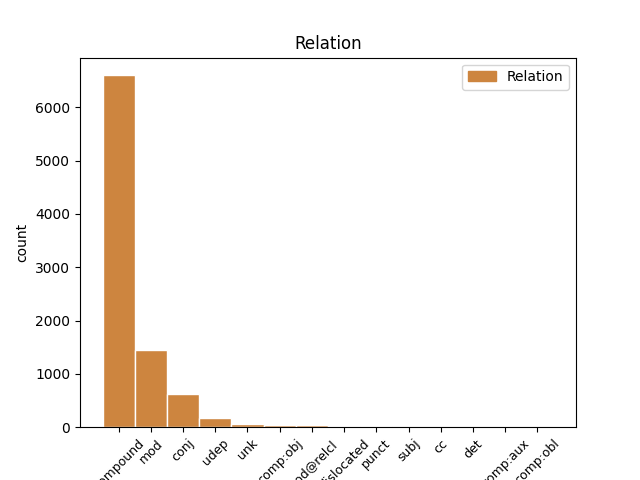
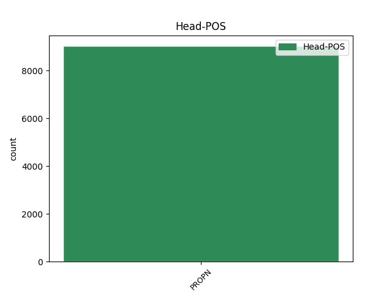
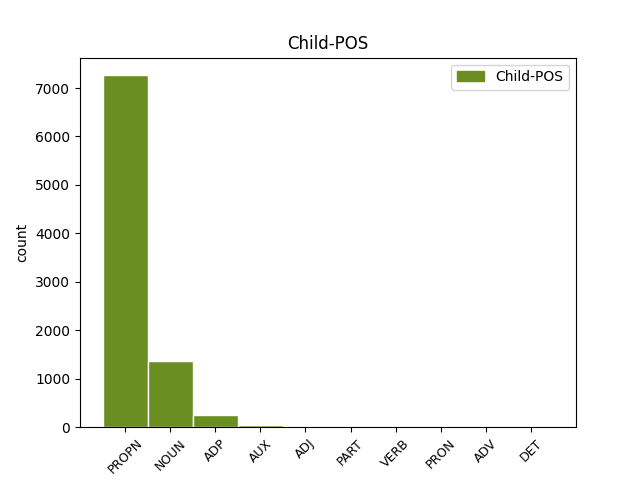

Distribution of features within this leaf



Agreement Rules sorted by frequency.
When the head token is PROPN
1 ایڈمرل _ _ _ _ 0 _ _ _
2 مولن _ _ _ _ 0 _ _ _
3 نے _ _ _ _ 0 _ _ _
4 امریکہ _ _ _ _ 0 _ _ _
5 کی _ _ _ _ 0 _ _ _
6 جانب _ _ _ _ 0 _ _ _
7 سے _ _ _ _ 0 _ _ _
8 اعتماد _ _ _ _ 0 _ _ _
9 کے _ _ _ _ 0 _ _ _
10 فقدان _ _ _ _ 0 _ _ _
11 پر _ _ _ _ 0 _ _ _
12 بات _ _ _ _ 0 _ _ _
13 کرتے _ _ _ _ 0 _ _ _
14 ہوئے _ _ _ _ 0 _ _ _
15 کہا _ _ _ _ 0 _ _ _
16 کہ _ _ _ _ 0 _ _ _
17 آئی _ _ _ _ 0 _ _ _
18 ایس _ _ _ _ 0 _ _ _
19 آئی _ _ _ _ 0 _ _ _
20 کے _ _ _ _ 0 _ _ _
21 بعض _ _ _ _ 0 _ _ _
22 عناصر _ _ _ _ 0 _ _ _
23 حقانی حقانی PROPN NNPC Case=Nom|Gender=Masc|Number=Sing|Person=3 24 compound _ ChunkId=NP8|ChunkType=child|Tam=0|Vib=0
24 نیٹورک نیٹورک PROPN NNP Case=Acc|Gender=Masc|Number=Sing|Person=3 0 _ _ _
25 کی _ _ _ _ 0 _ _ _
26 مدد _ _ _ _ 0 _ _ _
27 کر _ _ _ _ 0 _ _ _
28 رہے _ _ _ _ 0 _ _ _
29 ہےں _ _ _ _ 0 _ _ _
30 ۔ _ _ _ _ 0 _ _ _
Disagree Examples:
1 آل _ _ _ _ 0 _ _ _
2 انڈیا _ _ _ _ 0 _ _ _
3 مسلم _ _ _ _ 0 _ _ _
4 پرسنل _ _ _ _ 0 _ _ _
5 لا _ _ _ _ 0 _ _ _
6 بورڈ _ _ _ _ 0 _ _ _
7 نے _ _ _ _ 0 _ _ _
8 اب _ _ _ _ 0 _ _ _
9 تک _ _ _ _ 0 _ _ _
10 چار _ _ _ _ 0 _ _ _
11 اپیلیں _ _ _ _ 0 _ _ _
12 اترپردیش _ _ _ _ 0 _ _ _
13 سنی _ _ _ _ 0 _ _ _
14 وقف _ _ _ _ 0 _ _ _
15 بورڈ _ _ _ _ 0 _ _ _
16 , _ _ _ _ 0 _ _ _
17 محمد _ _ _ _ 0 _ _ _
18 ہاشم _ _ _ _ 0 _ _ _
19 انصاری _ _ _ _ 0 _ _ _
20 اور _ _ _ _ 0 _ _ _
21 مصباح _ _ _ _ 0 _ _ _
22 الدین الدین PROPN NNPC Case=Nom|Gender=Masc|Number=Sing|Person=3 0 _ _ _
23 کی کا ADP PSP AdpType=Post|Case=Acc|Gender=Fem|Number=Sing 22 conj _ ChunkId=NP6|ChunkType=child
24 جانب _ _ _ _ 0 _ _ _
25 سے _ _ _ _ 0 _ _ _
26 داخل _ _ _ _ 0 _ _ _
27 کروائی _ _ _ _ 0 _ _ _
28 ہےں _ _ _ _ 0 _ _ _
29 اور _ _ _ _ 0 _ _ _
30 مزید _ _ _ _ 0 _ _ _
31 چار _ _ _ _ 0 _ _ _
32 اپیلیں _ _ _ _ 0 _ _ _
33 داخل _ _ _ _ 0 _ _ _
34 کروانا _ _ _ _ 0 _ _ _
35 پیش _ _ _ _ 0 _ _ _
36 نظر _ _ _ _ 0 _ _ _
37 ہے _ _ _ _ 0 _ _ _
38 ۔ _ _ _ _ 0 _ _ _
1 منڈل _ _ _ _ 0 _ _ _
2 ڈیولپمنٹ _ _ _ _ 0 _ _ _
3 آفسیر _ _ _ _ 0 _ _ _
4 گجویل گجویل PROPN NNP Case=Nom|Gender=Masc|Number=Sing|Person=3 7 mod _ ChunkId=NP2|ChunkType=head|Tam=0|Vib=0
5 شریمتی _ _ _ _ 0 _ _ _
6 وتسلا _ _ _ _ 0 _ _ _
7 دیوی دیوی PROPN NNP Case=Acc|Gender=Fem|Number=Sing|Person=3 0 _ _ _
8 نے _ _ _ _ 0 _ _ _
9 سیاست _ _ _ _ 0 _ _ _
10 نیوز _ _ _ _ 0 _ _ _
11 کو _ _ _ _ 0 _ _ _
12 بتایا _ _ _ _ 0 _ _ _
13 کہ _ _ _ _ 0 _ _ _
14 منڈل _ _ _ _ 0 _ _ _
15 پریشد _ _ _ _ 0 _ _ _
16 کا _ _ _ _ 0 _ _ _
17 سہ_ماہی _ _ _ _ 0 _ _ _
18 جنرل _ _ _ _ 0 _ _ _
19 باڈی _ _ _ _ 0 _ _ _
20 اجلاس _ _ _ _ 0 _ _ _
21 صدر _ _ _ _ 0 _ _ _
22 منڈل _ _ _ _ 0 _ _ _
23 پریشد _ _ _ _ 0 _ _ _
24 این _ _ _ _ 0 _ _ _
25 ستیہ _ _ _ _ 0 _ _ _
26 لکشمی _ _ _ _ 0 _ _ _
27 کی _ _ _ _ 0 _ _ _
28 زیر _ _ _ _ 0 _ _ _
29 صدارت _ _ _ _ 0 _ _ _
30 29 _ _ _ _ 0 _ _ _
31 مئی _ _ _ _ 0 _ _ _
32 کو _ _ _ _ 0 _ _ _
33 11 _ _ _ _ 0 _ _ _
34 بجے _ _ _ _ 0 _ _ _
35 دن _ _ _ _ 0 _ _ _
36 میٹنگ _ _ _ _ 0 _ _ _
37 ہال _ _ _ _ 0 _ _ _
38 میں _ _ _ _ 0 _ _ _
39 منعقد _ _ _ _ 0 _ _ _
40 ہوگا _ _ _ _ 0 _ _ _
41 ۔ _ _ _ _ 0 _ _ _
1 قاہرہ _ _ _ _ 0 _ _ _
2 میں _ _ _ _ 0 _ _ _
3 واقع _ _ _ _ 0 _ _ _
4 الازہر الازہر PROPN NNPC Case=Nom|Gender=Masc|Number=Sing|Person=3 5 compound _ ChunkId=NP2|ChunkType=child|Tam=0|Vib=0
5 یونیورسٹی یونیورسٹی PROPN NNP Case=Acc|Gender=Fem|Number=Sing|Person=3 0 _ _ _
6 کے _ _ _ _ 0 _ _ _
7 مفتی _ _ _ _ 0 _ _ _
8 اعظم _ _ _ _ 0 _ _ _
9 محمد _ _ _ _ 0 _ _ _
10 سید _ _ _ _ 0 _ _ _
11 طنطوی _ _ _ _ 0 _ _ _
12 نے _ _ _ _ 0 _ _ _
13 سنٹرل _ _ _ _ 0 _ _ _
14 امام _ _ _ _ 0 _ _ _
15 حسین _ _ _ _ 0 _ _ _
16 کونسل _ _ _ _ 0 _ _ _
17 سے _ _ _ _ 0 _ _ _
18 دہشت_گردوں _ _ _ _ 0 _ _ _
19 کے _ _ _ _ 0 _ _ _
20 صدرنشین _ _ _ _ 0 _ _ _
21 غضنفر _ _ _ _ 0 _ _ _
22 مہدی _ _ _ _ 0 _ _ _
23 سے _ _ _ _ 0 _ _ _
24 ملاقات _ _ _ _ 0 _ _ _
25 کے _ _ _ _ 0 _ _ _
26 دوران _ _ _ _ 0 _ _ _
27 یہ _ _ _ _ 0 _ _ _
28 ریمارکس _ _ _ _ 0 _ _ _
29 کیے _ _ _ _ 0 _ _ _
30 ۔ _ _ _ _ 0 _ _ _
1 واضح _ _ _ _ 0 _ _ _
2 رہے _ _ _ _ 0 _ _ _
3 رواں _ _ _ _ 0 _ _ _
4 برس _ _ _ _ 0 _ _ _
5 آسٹریلین _ _ _ _ 0 _ _ _
6 اوپن _ _ _ _ 0 _ _ _
7 کے _ _ _ _ 0 _ _ _
8 فائنل _ _ _ _ 0 _ _ _
9 میں _ _ _ _ 0 _ _ _
10 دینارا _ _ _ _ 0 _ _ _
11 سفینا _ _ _ _ 0 _ _ _
12 کو _ _ _ _ 0 _ _ _
13 سرینا _ _ _ _ 0 _ _ _
14 ولیمس _ _ _ _ 0 _ _ _
15 کے _ _ _ _ 0 _ _ _
16 خلاف _ _ _ _ 0 _ _ _
17 شکست _ _ _ _ 0 _ _ _
18 برداشت _ _ _ _ 0 _ _ _
19 کرنی _ _ _ _ 0 _ _ _
20 پڑی _ _ _ _ 0 _ _ _
21 جبکہ _ _ _ _ 0 _ _ _
22 گزشتہ _ _ _ _ 0 _ _ _
23 سیزن _ _ _ _ 0 _ _ _
24 فرنچ _ _ _ _ 0 _ _ _
25 اوپن _ _ _ _ 0 _ _ _
26 میں _ _ _ _ 0 _ _ _
27 سفینا _ _ _ _ 0 _ _ _
28 کو _ _ _ _ 0 _ _ _
29 سربیائی _ _ _ _ 0 _ _ _
30 ٹینس ٹینس PROPN NNPC Case=Nom|Gender=Masc|Number=Sing|Person=3 33 compound _ ChunkId=NP11|ChunkType=child|Tam=0|Vib=0
31 اسٹار _ _ _ _ 0 _ _ _
32 اینا _ _ _ _ 0 _ _ _
33 ایوانووچ ایوانووچ PROPN NNP Case=Acc|Gender=Fem|Number=Sing|Person=3 0 _ _ _
34 نے _ _ _ _ 0 _ _ _
35 شکست _ _ _ _ 0 _ _ _
36 دی _ _ _ _ 0 _ _ _
37 تھی _ _ _ _ 0 _ _ _
38 اور _ _ _ _ 0 _ _ _
39 اس _ _ _ _ 0 _ _ _
40 طرح _ _ _ _ 0 _ _ _
41 وہ _ _ _ _ 0 _ _ _
42 دو _ _ _ _ 0 _ _ _
43 مرتبہ _ _ _ _ 0 _ _ _
44 گرانڈ _ _ _ _ 0 _ _ _
45 سلام _ _ _ _ 0 _ _ _
46 خطابات _ _ _ _ 0 _ _ _
47 سے _ _ _ _ 0 _ _ _
48 محروم _ _ _ _ 0 _ _ _
49 رہیں _ _ _ _ 0 _ _ _
50 ۔ _ _ _ _ 0 _ _ _
1 واضح _ _ _ _ 0 _ _ _
2 رہے _ _ _ _ 0 _ _ _
3 رواں _ _ _ _ 0 _ _ _
4 برس _ _ _ _ 0 _ _ _
5 آسٹریلین _ _ _ _ 0 _ _ _
6 اوپن _ _ _ _ 0 _ _ _
7 کے _ _ _ _ 0 _ _ _
8 فائنل _ _ _ _ 0 _ _ _
9 میں _ _ _ _ 0 _ _ _
10 دینارا _ _ _ _ 0 _ _ _
11 سفینا _ _ _ _ 0 _ _ _
12 کو _ _ _ _ 0 _ _ _
13 سرینا _ _ _ _ 0 _ _ _
14 ولیمس _ _ _ _ 0 _ _ _
15 کے _ _ _ _ 0 _ _ _
16 خلاف _ _ _ _ 0 _ _ _
17 شکست _ _ _ _ 0 _ _ _
18 برداشت _ _ _ _ 0 _ _ _
19 کرنی _ _ _ _ 0 _ _ _
20 پڑی _ _ _ _ 0 _ _ _
21 جبکہ _ _ _ _ 0 _ _ _
22 گزشتہ _ _ _ _ 0 _ _ _
23 سیزن _ _ _ _ 0 _ _ _
24 فرنچ _ _ _ _ 0 _ _ _
25 اوپن _ _ _ _ 0 _ _ _
26 میں _ _ _ _ 0 _ _ _
27 سفینا _ _ _ _ 0 _ _ _
28 کو _ _ _ _ 0 _ _ _
29 سربیائی _ _ _ _ 0 _ _ _
30 ٹینس _ _ _ _ 0 _ _ _
31 اسٹار اسٹار PROPN NNPC Case=Nom|Gender=Masc|Number=Sing|Person=3 33 compound _ ChunkId=NP11|ChunkType=child|Tam=0|Vib=0
32 اینا _ _ _ _ 0 _ _ _
33 ایوانووچ ایوانووچ PROPN NNP Case=Acc|Gender=Fem|Number=Sing|Person=3 0 _ _ _
34 نے _ _ _ _ 0 _ _ _
35 شکست _ _ _ _ 0 _ _ _
36 دی _ _ _ _ 0 _ _ _
37 تھی _ _ _ _ 0 _ _ _
38 اور _ _ _ _ 0 _ _ _
39 اس _ _ _ _ 0 _ _ _
40 طرح _ _ _ _ 0 _ _ _
41 وہ _ _ _ _ 0 _ _ _
42 دو _ _ _ _ 0 _ _ _
43 مرتبہ _ _ _ _ 0 _ _ _
44 گرانڈ _ _ _ _ 0 _ _ _
45 سلام _ _ _ _ 0 _ _ _
46 خطابات _ _ _ _ 0 _ _ _
47 سے _ _ _ _ 0 _ _ _
48 محروم _ _ _ _ 0 _ _ _
49 رہیں _ _ _ _ 0 _ _ _
50 ۔ _ _ _ _ 0 _ _ _